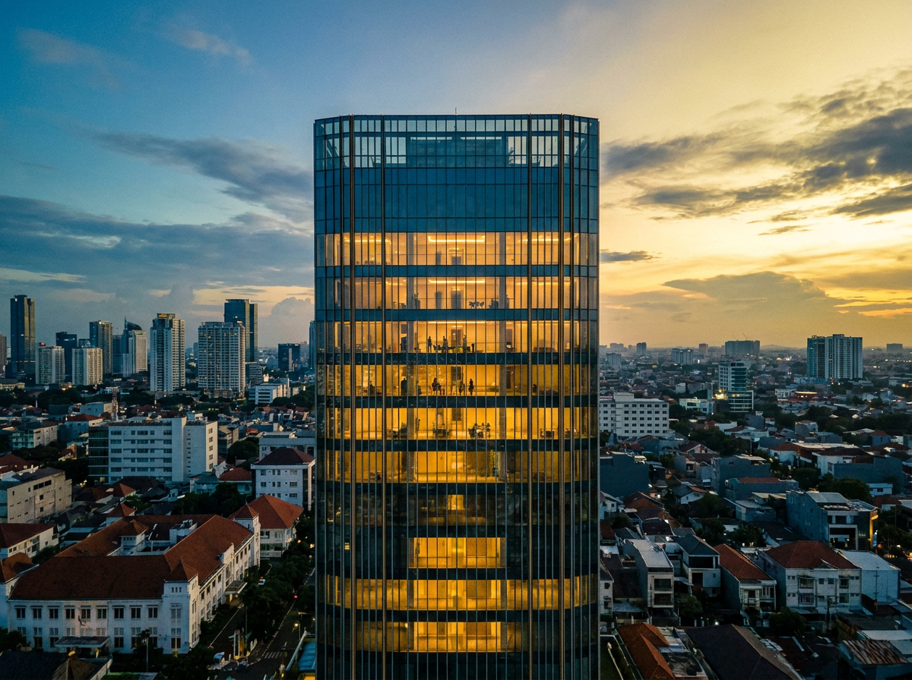
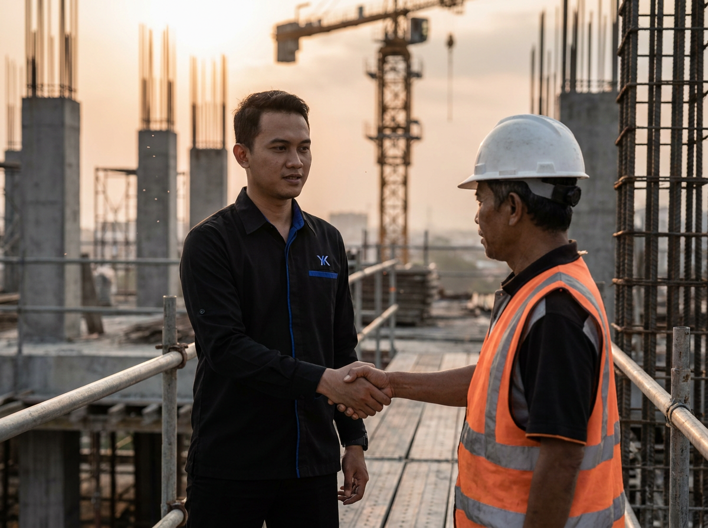
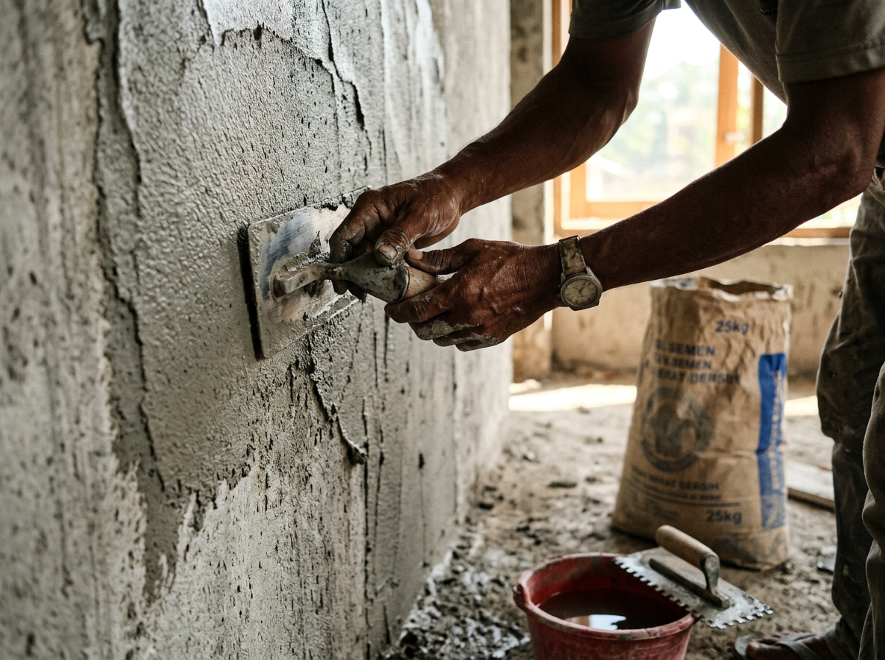
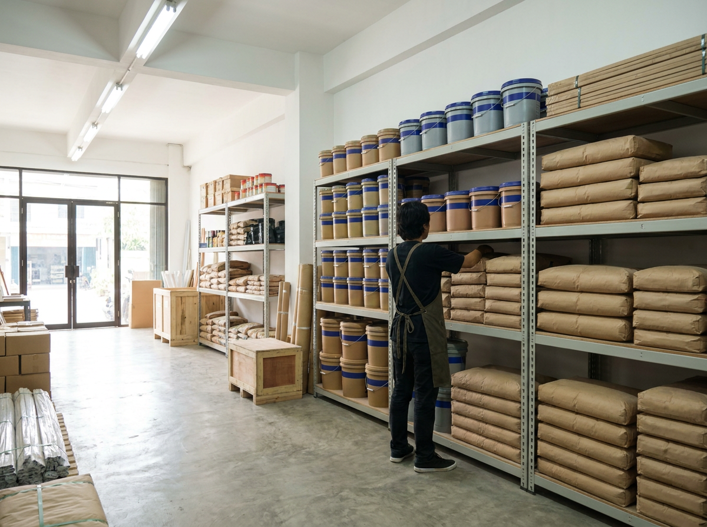
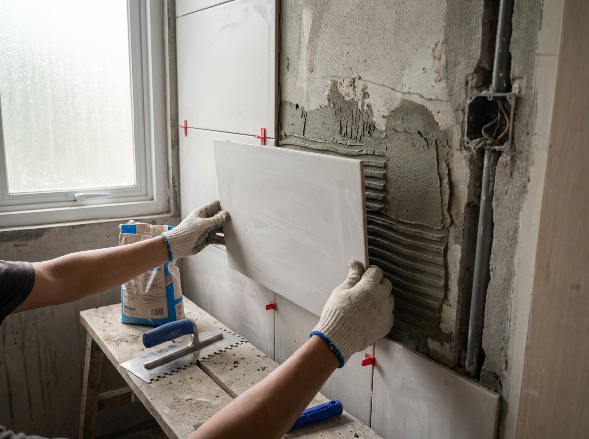
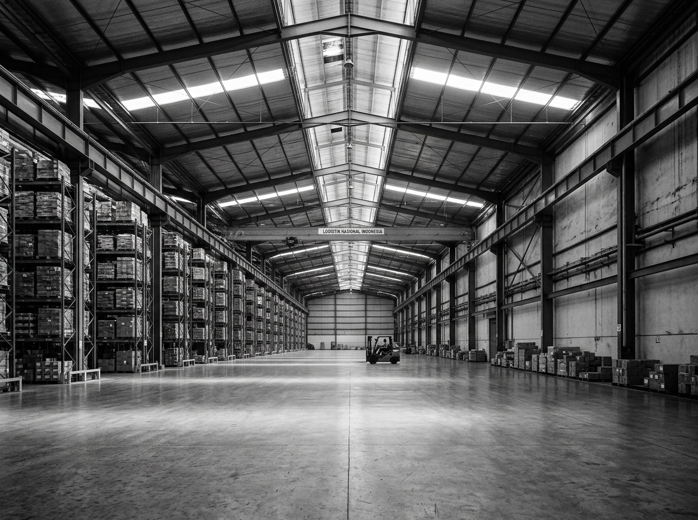
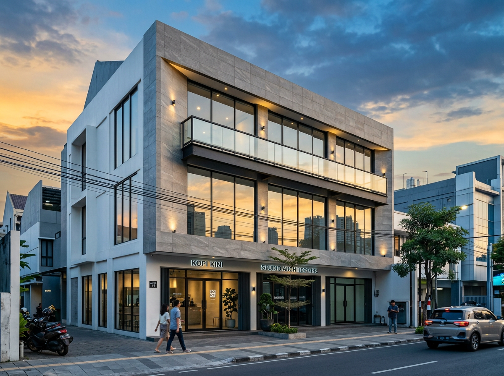

01
Residensial High-Rise
Apartemen 32 Lantai, Jakarta Selatan
Produk yang Digunakan
YK NN® · YK Curing®
Sembilan lini produk YK untuk beton, mortar, waterproofing, floor, grouting, tile, & bonding, dari proyek besar sampai renovasi sehari-hari.

Mulai dari kontraktor besar yang menggarap apartemen, sampai tukang renovasi yang butuh bonding agent untuk patching dinding rumah.

Beton struktural, fondasi mesin presisi, lantai gudang & pabrik. Mix design custom & site visit aplikator senior untuk proyek high-rise dan industri.

Mortar admixture, penyumbat bocor seketika, bonding SBR untuk patching, screed, & rendering. Produk yang aplikator percaya untuk kerja sehari-hari.

Ready mix mortar, tile adhesive on-tile, bonding agent multi-fungsi. Kemasan praktis untuk konsumen end-user dengan margin yang sehat.

Atap bocor, kamar mandi rembes, lantai retak, keramik lepas. Produk yang siap pakai tinggal tambah air, dengan panduan aplikasi step-by-step.
Mulai dari concrete admixture untuk pengecoran struktur sampai bonding agent untuk renovasi, semua dengan kualitas yang konsisten dan dukungan teknis lengkap di lapangan.
Beberapa proyek yang dipercayakan menggunakan Yosi Hutama Karya. Mulai dari high-rise residensial sampai pabrik industri.



Setiap produk diproduksi dengan quality control pabrik. Mix design terstandarisasi, hasil prediktabel di setiap pengecoran.
Tim aplikator & engineer produk siap site visit gratis ke lokasi proyek. Konsultasi mix design, aplikasi, & pengujian.
Memenuhi standar CRD C-621, ASTM C-1107, dan formula bebas klorin untuk struktur bertulang & pratekan.
Pengiriman ke seluruh Indonesia dari gudang Jakarta Timur. Termin pembayaran fleksibel untuk proyek besar.
Setiap aplikasi di proyek mendapat garansi hasil. After-sales support tanpa biaya tambahan untuk pengguna terdaftar.
Formula dikembangkan & diuji di lab Indonesia, disesuaikan dengan kondisi iklim tropis & material lokal.
Proses jelas, tanpa kebingungan. Tim kami pandu dari konsultasi awal sampai support pasca pengiriman.
Hubungi via form, WA, atau telepon. Ceritakan kebutuhan proyek, volume, timeline, jenis struktur.
Untuk proyek besar, tim aplikator senior datang ke lokasi untuk konsultasi mix design & sample uji.
Penawaran resmi dengan harga, termin pembayaran, dan jadwal pengiriman. Pengadaan via PO standar.
Pengiriman ke lokasi proyek dengan technical support di lapangan. Garansi hasil & after-sales tanpa biaya.
Dokumen teknis & spec sheet yang dibutuhkan untuk masukin produk YK ke RKS proyek atau pengujian lab. Gratis untuk download.
Spesifikasi teknis lengkap per produk: dosis, konsumsi, properti fisik, standar yang dipenuhi. Format PDF, siap dispec di RKS.
Brosur perusahaan: profil PT. Yosi Hutama Karya, kapabilitas pabrik, sertifikasi, dan track record proyek.
Tutorial step-by-step aplikasi tiap produk di lapangan. Dari mix preparation sampai finishing, semua dalam Bahasa Indonesia.
Rekomendasi produk & dosis per tipe proyek: high-rise, pabrik, infrastruktur, hunian. Siap dimasukin ke spec engineering.
Hubungi tim sales kami untuk quotation, sample produk, atau jadwalkan site visit aplikator senior.
Minta Penawaran Sekarang